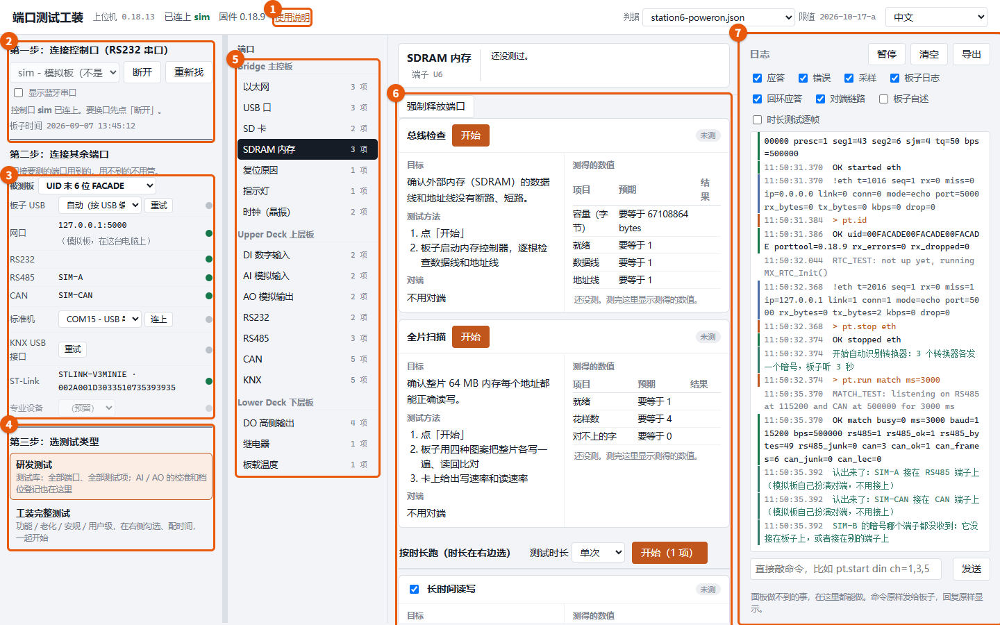
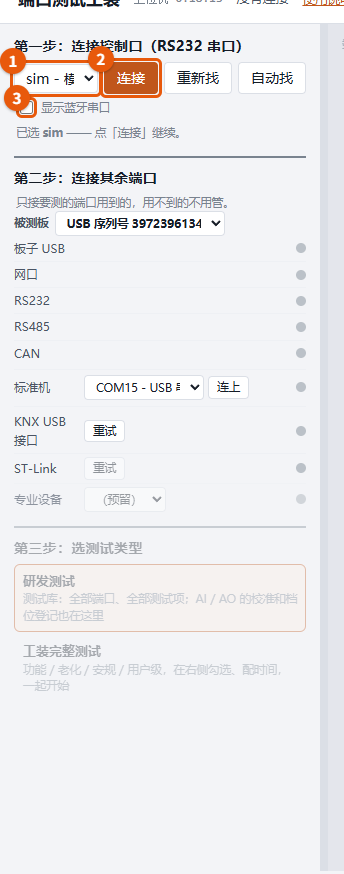
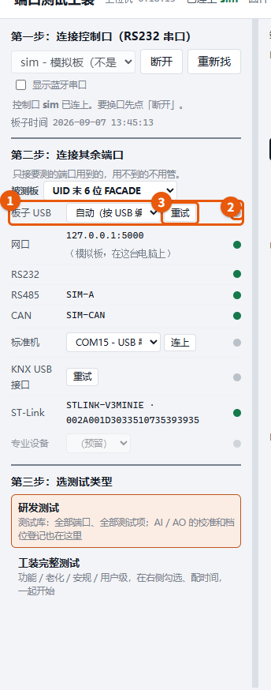
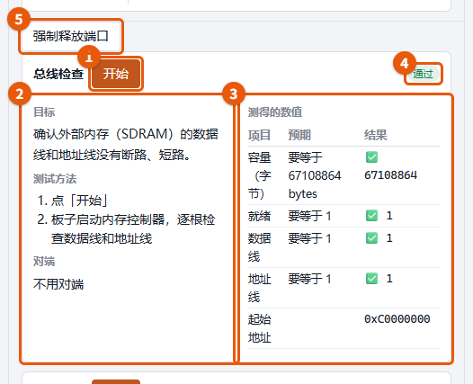
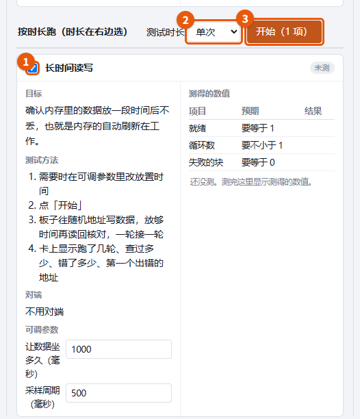
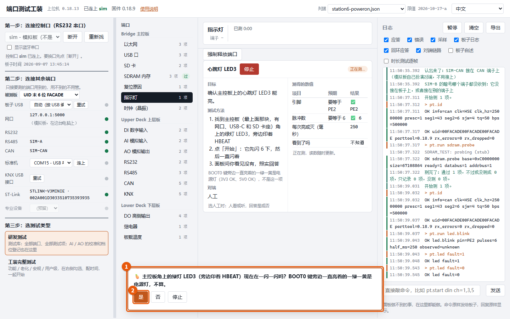
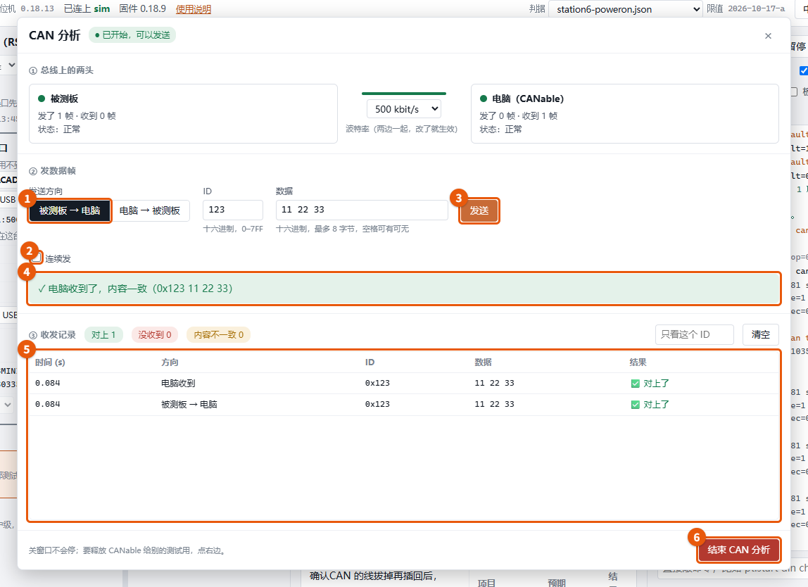
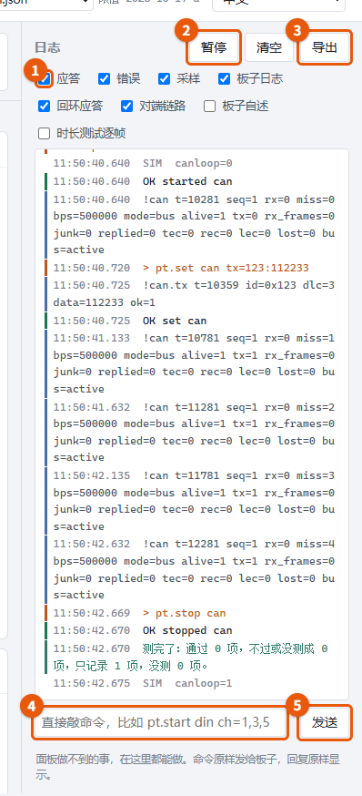
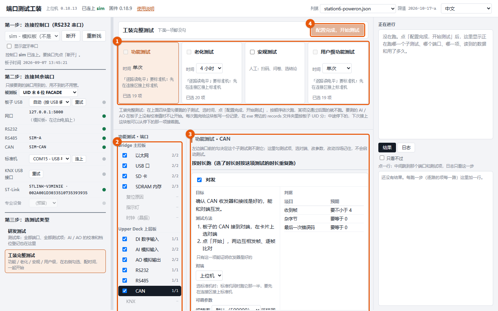

端口测试工装 · 使用说明
这份说明跟着面板走：截图上的橙色框和编号就是要看、要点的地方，下面按同一个编号讲。截图是在模拟板上截的，真板子上样子一样，只是读数不同。
- 面板长什么样
- 第一步：连接控制口
- 第二步：连接其余端口
- 研发测试：跑一张卡片
- 按时长跑
- 面板要你回答的时候
- CAN 分析（高级窗口）
- 日志和命令
- 工装完整测试
- 注意事项
1. 面板长什么样

- 使用说明：就是这一页。
- 第一步：连接控制口，所有读数都走这根线。
- 第二步：连接其余端口，只接要测的端口用到的。
- 第三步：选测试类型，研发测试或工装完整测试。
- 端口列表：点一个端口，右边出现它的测试项。
- 测试项卡片：每张卡写着目标、测试方法、对端，右边是测得的数值。
- 日志：板子和面板说的每一句话都在这里。
2. 第一步：连接控制口

- 选板子的 RS232 控制口：一般是插在电脑上的那个 USB 转串口，接端子 C05/C06。没板子时选「sim - 模拟板」可以先熟悉面板。
- 点「连接」。连上后第二步、第三步才能用。
- 蓝牙串口默认不列出来，要用就勾上「显示蓝牙串口」。
3. 第二步：连接其余端口

- 每一行是一个对端：板子 USB、网口、RS485 / CAN 转换器、标准机、KNX USB 接口、ST-Link。RS485、CAN 两行连上控制口后自动识别，认不出来再手选。
- 行尾的圆点：绿 = 连上，灰 = 没连上。鼠标停在灰的那一行上能看到原因。
- 灰的行旁边有「重试」，接好线后点它再找一次。
用不到的端口不用管，灰着也能测别的。
4. 研发测试：跑一张卡片
第三步选「研发测试」，中间点一个端口。上面一组卡片各自有「开始」，只跑这一张。

- 开始：只跑这一张卡。跑的时候按钮变「停止」。
- 目标、测试方法、对端：这一项为了确认什么、按什么步骤做、要接什么。照测试方法做就行。
- 测得的数值：每条判据一行，预期和结果并排，✅ 是过、❌ 是不过。
- 结论：通过 / 不过 / 只记录。
- 强制释放端口：测试报「串口被占」时点它，停掉正在跑的测试、关掉面板开着的口。
5. 按时长跑
下面一组是可以跑一段时间的项（比如内存长时间读写）。

- 勾要跑的项。
- 选测试时长：单次，或者跑几分钟、几小时、一直跑。
- 点「开始（N 项）」，勾了的项一起跑，第一次不过就停。
6. 面板要你回答的时候
要人看、要人量的项（指示灯、万用表读数、示波器），面板会在下面弹出带 🍍 的提问。

- 照问题去看或量。
- 照实点「是」/「否」或填数，面板按你的回答判。点「停止」就不测这一项了。
7. CAN 分析（高级窗口）
板子和电脑上的 CAN 转换器（CANable）接在同一条 CAN 总线上。CAN 端口的「CAN 分析」卡片上点「打开高级窗口」，这一项就开始了，不用另外点「开始」。

- 发送方向：被测板 → 电脑，或电脑 → 被测板。再填 ID 和数据。
- 连续发：勾上才出现间隔和次数。连续发的时候「发送」变成「停止」。
- 发送：发一帧。
- 结论：对方收没收到、内容一不一致；没收到时写出原因和该查什么。
- 收发记录：两边发的和收到的每一帧。
- 结束 CAN 分析：停掉这一项、放开 CANable。右上角的 × 只收起窗口，不会停。
CAN 分析只记录，不判 CAN 口过不过。
8. 日志和命令

- 勾选要看哪几类：应答、错误、采样、板子日志……不勾的照样记着，导出时都有。
- 暂停：日志停住不滚，方便看。
- 导出：把整份日志存成文件，报问题时附上。
- 命令框：面板做不到的事在这里直接敲命令发给板子。
- 发送：发出去，板子的回答原样显示在日志里。
9. 工装完整测试
第三步选「工装完整测试」：功能、老化、安规、用户级四块，配好后一次跑完。

- 子测试：勾要跑的子测试，选每块的时间。
- 端口：勾这个子测试要测哪些端口，点一个端口看它的测试项。
- 测试项：勾要跑的项、选对端、改参数，右边是判据。
- 配置完成，开始测试：按顺序依次跑，某项没通过后面的就不跑。每块板的记录存在 exe 旁边的 records 文件夹里。
10. 注意事项
- 面板打开后会多一个黑窗口，别关它，关了面板就停。
- exe 旁边的
plans 文件夹别删：每一项「什么算过」都写在里面。
- 有些判据的数没有出处，卡片上给的是默认值，可以直接在卡片上改，按自己的实测定。
- 截图里连接区的 ST-Link、标准机是模拟板的样子；真板子上要接上它们才是绿的。